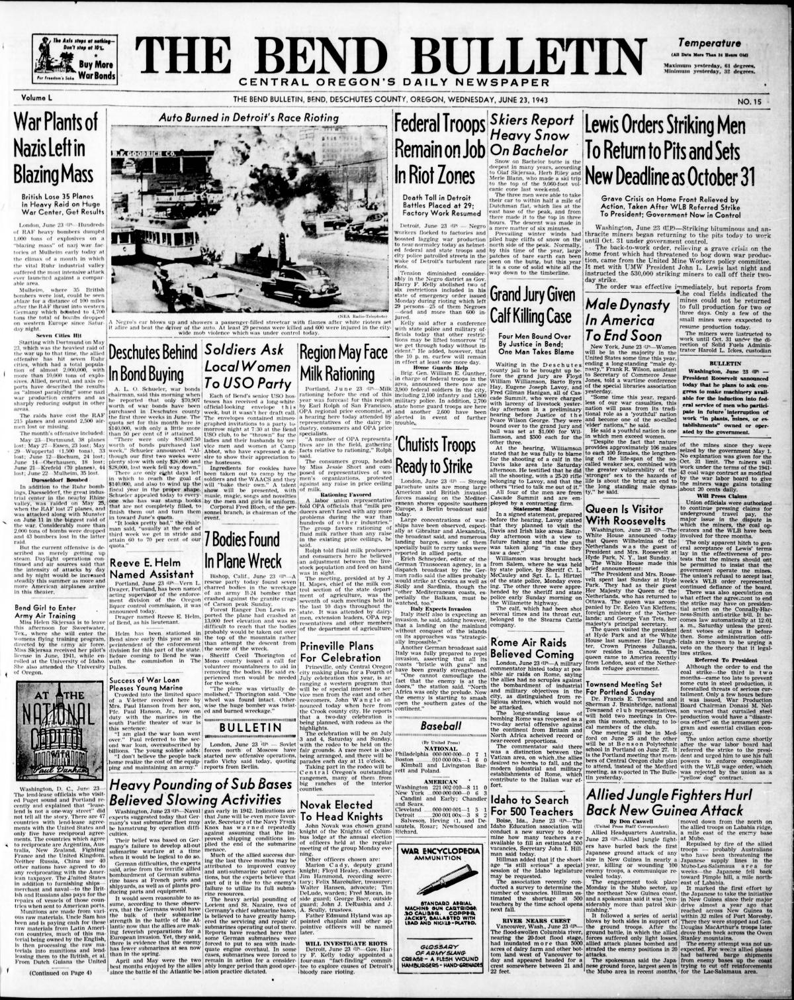
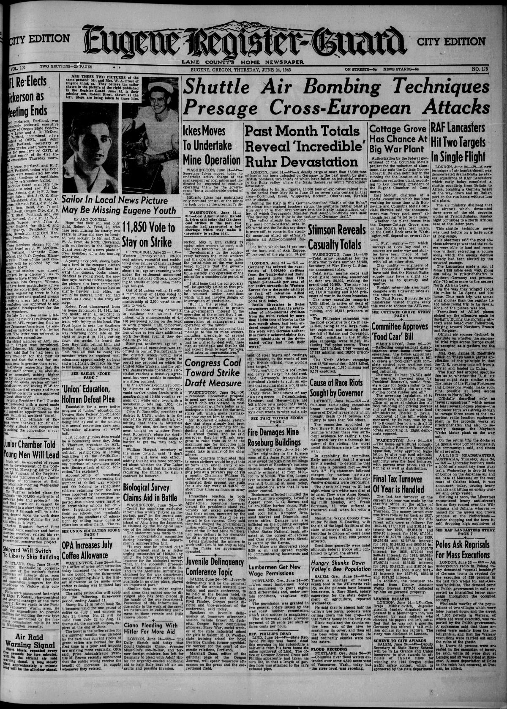

HN HN-539 · June 25, 1943 · Civil Rights & Social Change > Racial, Ethnic & Religious Justice > Lynching and racial violence
Source: Evansville Argus, p. 8 — original page; Detroit Historical Society, 1943 race riot.
Report: A Black-owned newspaper said the head of the auto workers' union wanted a special grand-jury investigation after racial violence in Detroit, then reporting 29 people killed.
Assessment: The later recorded death toll was 34: 25 Black people and nine white people. A call for a special grand jury did not itself establish that investigators had proven all individual assailants' guilt. The racially unequal death toll is essential context omitted by a bare total.
Identity-review candidate peers: HN-540:Algorithmic
Authentic images retrieved from Historic Oregon Newspapers (University of Oregon). Article crops are located using the archive's own OCR word coordinates and rendered at native crop resolution; article clips are assembled from the archive's own article-block images; page scans are reduced-size access renditions. No images were generated, mocked, or retouched.


Not yet acquired. Queued for provider-specific acquisition testing (see source-acquisition manifest).
URL (preserved verbatim): https://newspapers.library.in.gov/?a=d&d=EA19430625.1.8
Saved research report: Historical_Newspaper_Event_Research_528-552_2026-10-23.md
Evidence note: A newspaper report means a historical publication made a claim; it does not establish that claim as fact. Contemporary reporting is separated from later scholarly context and our own assessment.